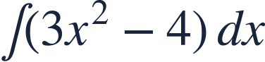
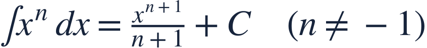
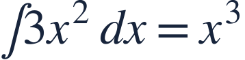
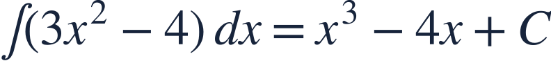
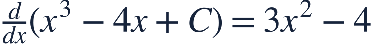
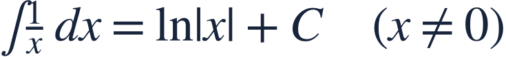
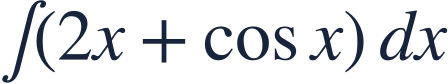

Basic antiderivatives
기본 원시함수

An antiderivative reverses differentiation, with a family of possible constants.
원시함수는 미분을 거꾸로 하며 여러 적분상수를 가집니다.

An antiderivative reverses differentiation, with a family of possible constants.
원시함수는 미분을 거꾸로 하며 여러 적분상수를 가집니다.

Ask which function differentiates to each term.
각 항이 어떤 함수를 미분한 결과인지 생각하세요.
Indefinite integration gives a family, since every constant has derivative zero.
상수는 모두 미분하면 0이므로 부정적분은 함수들의 모임을 줍니다.

Raise the power and divide by the new exponent.
지수를 하나 높이고 새 지수로 나눕니다.

Include a single arbitrary constant for the full sum.
전체 합에 하나의 임의 상수를 붙입니다.

Differentiate to verify the antiderivative.
미분하여 원시함수가 맞는지 확인합니다.

The n=−1 case uses a logarithm, not division by zero.
n=−1인 경우에는 0으로 나누지 않고 로그를 씁니다.

Find an antiderivative family.
원시함수들의 식을 구하세요.